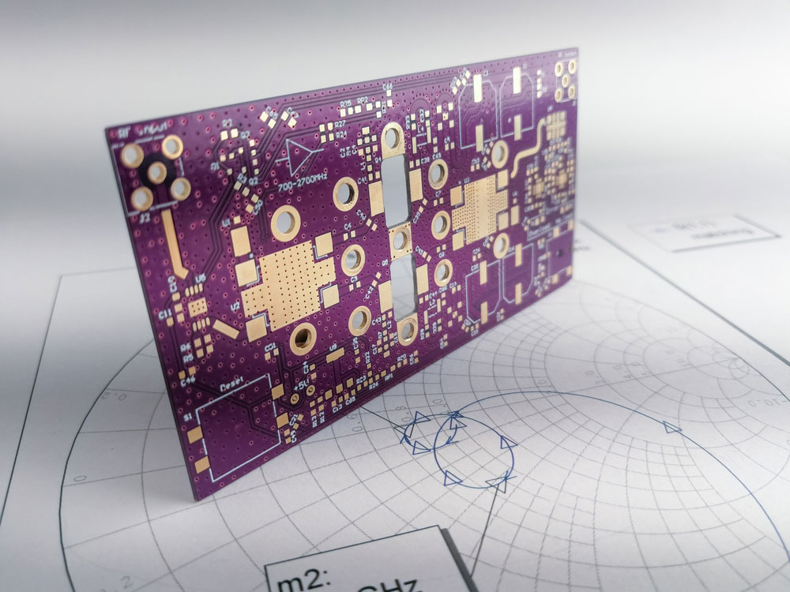
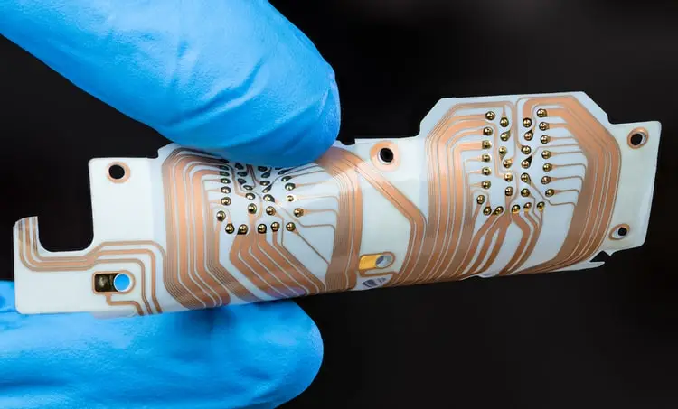

MEDIA TRANSMISI JARINGAN KOMPUTER
Dalam terminologi jaringan komputer, media transmisi adalah saluran antara pemancar atau pemberi sinyal data dan penerima data. Saluran tersebut menjadi penghubung data yang dikirim dari satu tempat ke tempat lain.
Yang termasuk dalam media transmisi fisik pada jaringan adalah kabel twisted pair, kabel coaxical, kabel fiber optik, stripline, dan microstripline.
KABEL TWISTED PAIR

Kabel twisted pair termasuk media transmisi fisik yang paling banyak digunakan. Kabel twisted pair adalah jenis kabel yang terdiri dari 2 kabel konduktor berinsulasi terpisah yang dililitkan satu sama lain. Umumnya, beberapa pasang kabel dibundel bersama dalam selubung pelindung.
KABEL COAXICAL

Kabel coaxical adalah kabel yang memiliki penutup plastik luar yang berisi lapisan insulasi yang terbuat dari PVC dan 2 konduktor paralel masing-masing memiliki penutup pelindung terisolasi yang terpisah.
KABEL FIBER OPTIK

Kabel fiber optik adalah jenis kabel transmisi yang menggunakan konsep pemantulan cahaya melalui inti yang terbuat dari kaca atau plastik. Inti dikelilingi oleh kaca atau penutup plastik yang kurang padat yang disebut cladding. Kabel ini umumnya digunakan untuk transmisi data dalam jumlah besar.
STRIPLINE

Stripline adalah media saluran transmisi elektromagnetik transversal yang ditemukan oleh Robert M. Barrett dari Pusat Penelitian Angkatan Udara Cambridge pada 1950-an. Stripline adalah bentuk paling awal dari saluran transmisi planar..
MICROSTRIPLINE

Media transmisi non-fisik juga disebut sebagai media transmisi wireless atau unbounded. Media ini mengandalkan gelombang elektromagnetik dan tidak memerlukan media fisik untuk transmisi sinyal data.
Browser Compatibility
This template has been tested in the following browsers:
- Internet Explorer 9
- FireFox 25
- Google Chrome 31